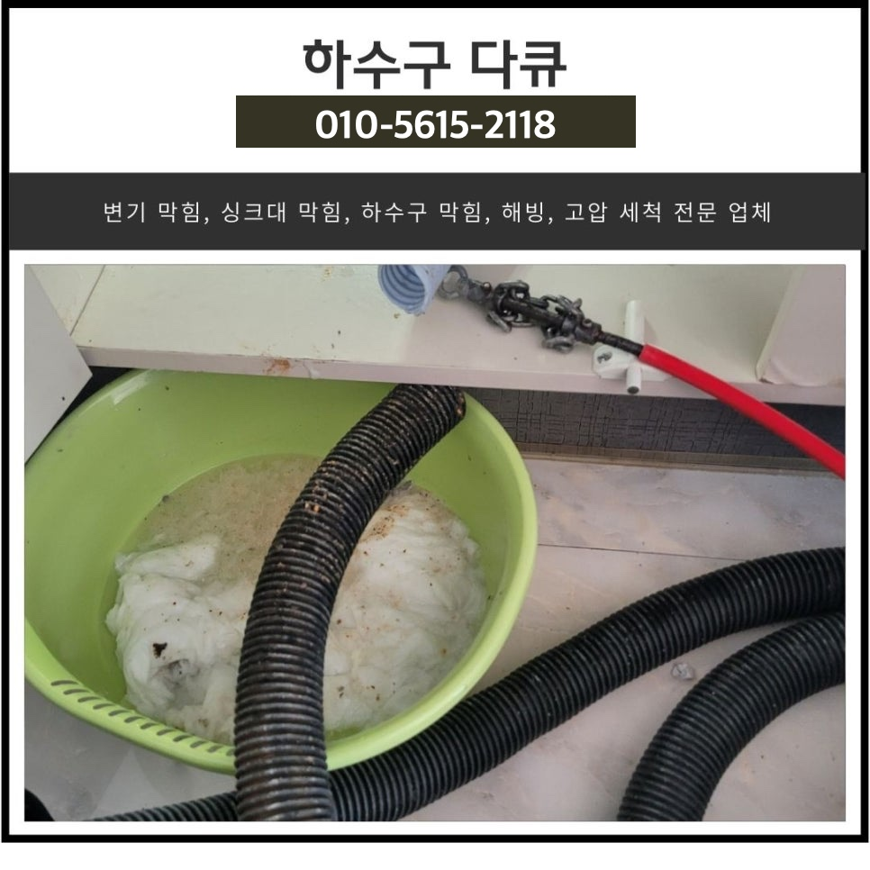
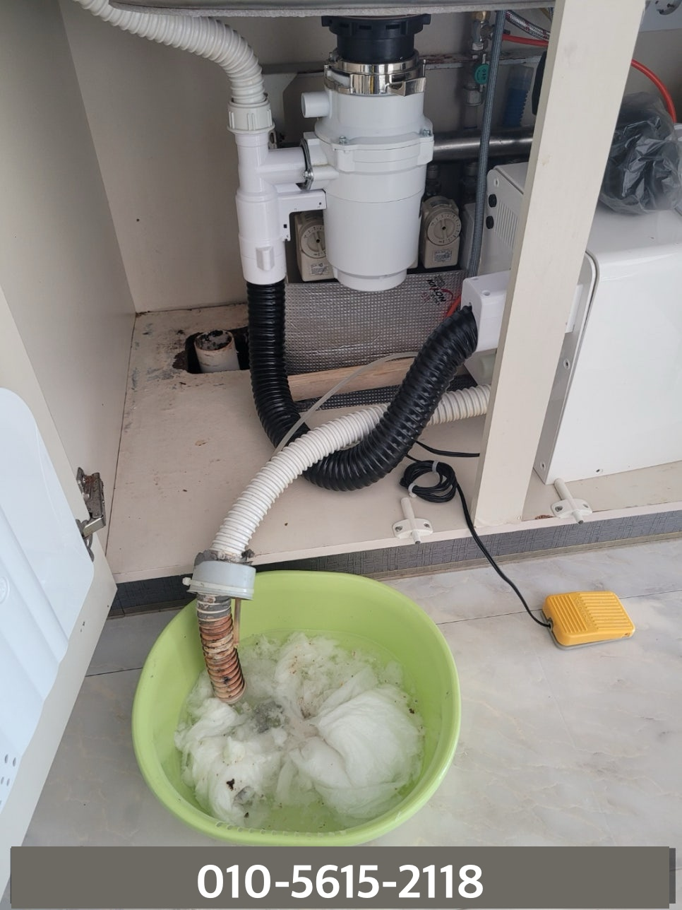
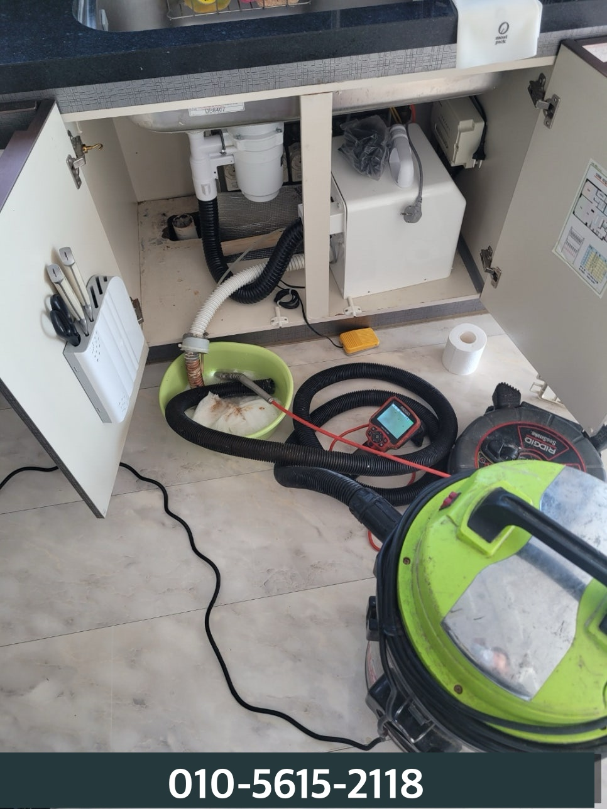
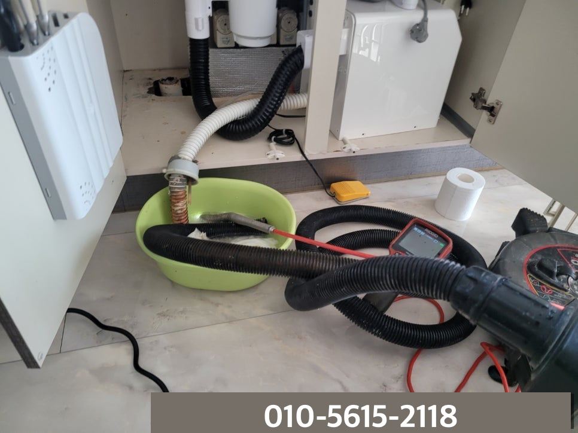
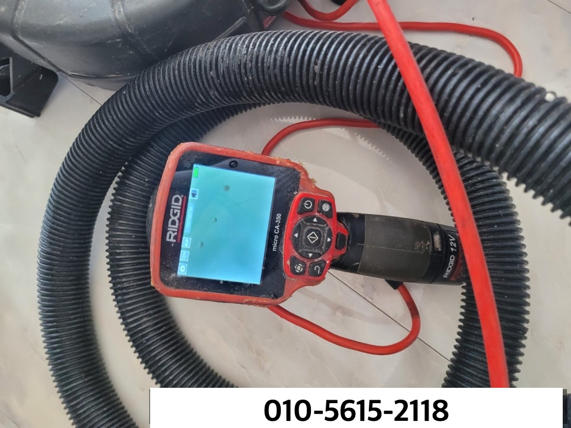
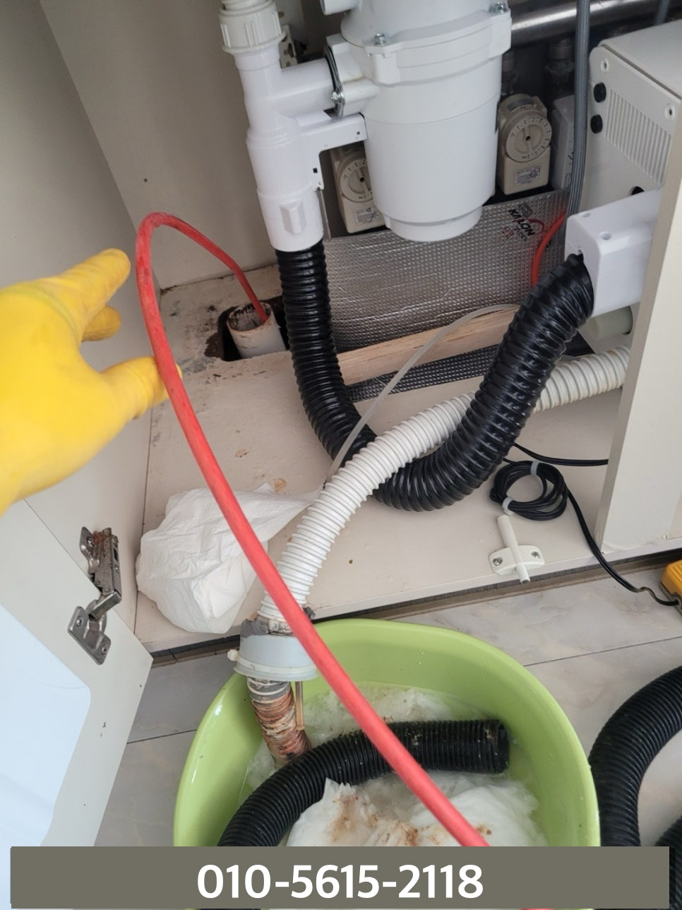
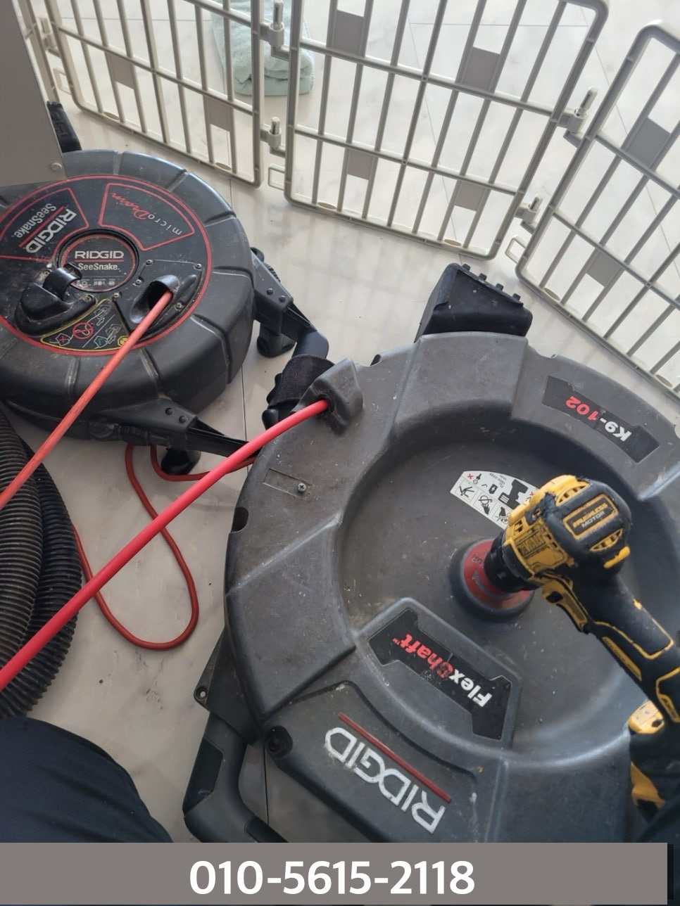

🏠 화성 병점동 음식물 처리기 싱크대 막힘 진안동 하수구 역류 해결
용인시 처인구 배관막힘 전문 시공 후기

📋 작업 개요
- 위치: 용인시 처인구, 수원시 영통구, 화성시 동탄
- 서비스 유형: 배관막힘, 고압세척, 내시경점검, 음식물처리기
- 작업 일시:
- 업체명: 하수구수사대 (010-5615-2118)
🔍 문제 상황
안녕하세요.
화성 병점동 음식물 처리기 싱크대 막힘, 진안동 하수구 역류 해결 업체 하수구 다큐입니다.
외식 물가가 치솟으면서 밀키트를 간편하게 조리하거나 배달음식을 선호하는 가정이 늘어나고 있습니다.
집에서 요리를 하지는 않아도 발생되는 음식물 쓰레기를 처리하는 문제는 생각보다 번거롭고 귀찮다 보니 많은 가정에서 음식물 처리기를 설치해 이용하고 있습니다.
음식물 처리기의 경우 음식물 쓰레기를 모아 둘 필요 없이 바로 처리할 수 있다 보니 악취가 발생하거나 벌레가 꼬이는 것을 방지하여 주방을 깔끔하게 유지할 수 있는 것이 가장 큰 장점이에요.
또한, 공동주택처럼 음식물 쓰레기를 정해진 장소에 버려야 하는 경우 밖으로 나가야 하는 번거로움이 줄어들죠.
하지만 싱크대에 음식물을 넣어 분쇄하는 작업이 이루어지다 보니 싱크대 배관이 자주 막히게 됩니다.

🔎 원인 분석
💡 전문가 진단: 정밀 진단 장비를 사용하여 슬러지의 고착 여부를 판명하고 타격/세척 작업을 실시했습니다.
오늘은 화성 병점동 음식물 처리기로 인해 싱크대 막힘이 발생한 현장을 사진을 보면서 어떻게 해결했는지 설명해 드릴게요.
싱크대에서 사용한 그릇을 세척하는데 물이 내려가지 않고 반대로 역류한다며 같은 아파트에 거주하고 계시는 이웃에게 소개를 받은 고객님께서 다급하게 연락을 주셨습니다.
고객님께 주소를 받아 30분 만에 현장에 도착했어요.
진안동 하수구 역류 해결을 위해 장비를 챙겨 주방으로 들어가 싱크대부터 확인해 봤는데요.
고객님께서는 싱크대에 음식물 처리기를 연결하여 사용하고 계셨습니다.
위에서 얘기했던 대로 싱크대와 연결해서 사용하는 음식물 처리기의 경우 음식물이 잘 갈리지 않거나, 배관의 구배가 좋지 않으면 싱크대 막힘이 발생할 수 있어요.
정확한 원인을 파악하기에 앞서 흘러가지 못하고 배관에 고여있는 물과 각종 이물질을 석션을 이용해 빨아들여 제거하는 작업을 진행했습니다.
그런 다음 내시경 카메라를 배관 내부로 진입시켜 배관을 살펴보니, 내부에 음식물 찌꺼기와 기름 슬러지로 인해 꽉 막혀있는 상태였어요.

🔧 작업 과정
고객님께 싱크대 막힘의 원인과 해결 방법을 설명해 드리고 진안동 하수구 역류 해결 작업을 시작했습니다.
진안동 하수구 역류 해결을 위해 하수구 다큐가 사용하게 될 장비는 플렉스 샤프트 장비에요.
플렉스 샤프트 장비는 배관을 막고 있는 각종 이물질과 기름 슬러지 덩어리를 타격해 잘게 부숴주는 역할을 합니다.
잘게 분쇄된 이물질은 배관 깊은 곳으로 흘러들어가 다시 막힘이 발생할 수 있어 석션 장비를 이용해 빨아들여 완벽하게 제거하는 작업을 반복해서 하게 됩니다.
워낙에 많은 양의 이물질이 배관에 쌓여있었던 터라 1시간 가까이 작업을 진행한 끝에 잔여 이물질 없이 깨끗해진 배관을 확인할 수 있었어요.
옆에서 작업을 지켜보시던 고객님께서 음식물 처리기를 설치한지 2년째인데, 그동안 3번이나 싱크대 막힘이 발생했다며 그 원인이 음식물 처리기인지 물어보셨습니다.
아무래도 잘 갈리지 않고 흘러가는 음식물로 인해 막힘이 발생할 확률이 높다고 안내해 드렸더니, 겸사겸사 철거해달라고 요청하셨어요.
배관 청소를 모두 마치고 설치되어 있던 음식물 처리기를 철거하고 배수통 교체도 진행해 드렸습니다.
배관의 내부도 깔끔하게 청소되고, 음식물 처리기도 제거해서 싱크대도 새것 같고, 몇 년은 하수구 막힘 걱정 없이 주방을 이용할 수 있겠다고 말씀해 주셔서 뿌듯한 현장이었습니다.
마지막으로 배수통은 제대로 설치되고, 배관 내부에 다른 문제는 없는지 확인해 보기 위해 많은 양의 물을 받아 한 번에 흘려보내며 꼼꼼하게 테스트 진행해 드렸습니다.
많은 양의 물이 한꺼번에 흘러내려가도 아무런 문제가 없는 것을 확인한 뒤 작업을 마무리할 수 있었어요.
하수구 다큐는 고객님께서 도움을 요청하실 때 빠르게 작업을 진행할 수 있도록 대기하고 있습니다.


✅ 작업 완료
지금 싱크대 막힘으로 고민하고 계신다면, 편안하게 연락 주세요.
시원하게 해결해 드리겠습니다.
경기도 화성시 동탄대로 677-10 7층 715-A10호




⚠️ 음식물처리기 올바른 사용법
- ✅ 기름기가 많은 음식(지방류, 육류 비계 등)은 하수구 고착의 주원인이 되므로 투입하지 마세요.
- ✅ 작동 시 충분한 양의 물을 동시에 흘려보내 잘게 갈린 찌꺼기가 배관 끝까지 흘러가게 하세요.
- ✅ 부피가 크거나 질긴 채소류는 일반 쓰레기로 분리수거해 주세요.
- ✅ 배수가 느려지는 느낌이 들면 화학 세정제보다 신속히 내시경 점검을 받으십시오.
💡 핵심 정리
- 확실한 장비 작업(내시경 점검 및 샤프트 스케일링)으로 원인을 뿌리 뽑습니다.
- 작업 후 1년 이내에 동일한 부위 재발 시 100% 무상 A/S 서비스를 보장합니다.
- 서울 · 경기 · 인천 전 지역에 24시간 언제든 긴급 출동할 수 있도록 항시 대기 중입니다.
❓ 자주 묻는 질문 (FAQ)
🚨 용인시 처인구 배관막힘 문제로 고민이신가요?
정확한 원인 진단과 확실한 시공으로 재발 없는 해결을 약속드립니다.
24시간 긴급 출동 | 서울 · 경기 · 인천 전지역 | 1년 내 재발 시 무상 A/S